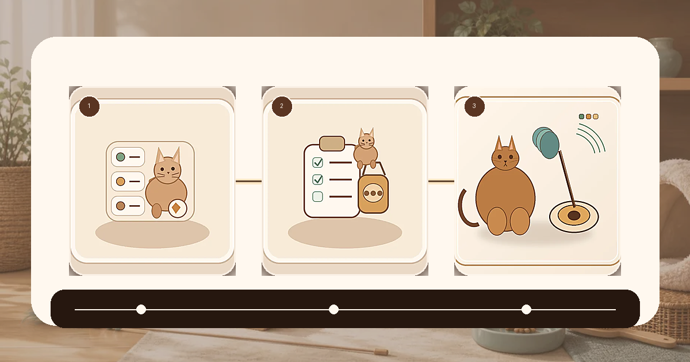
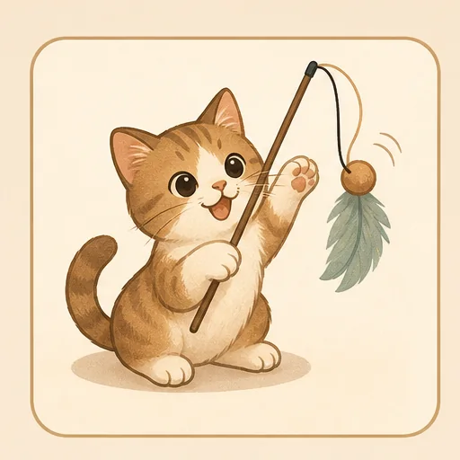
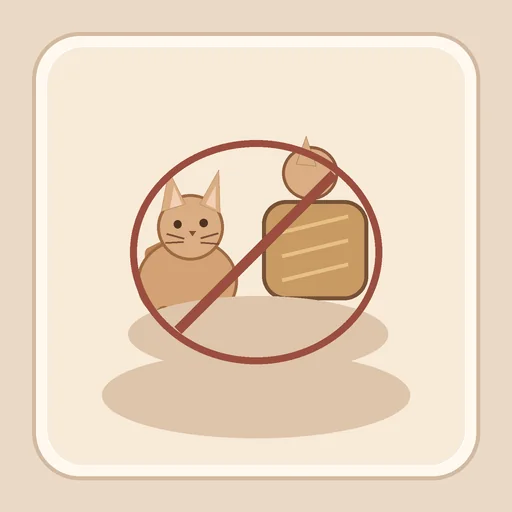
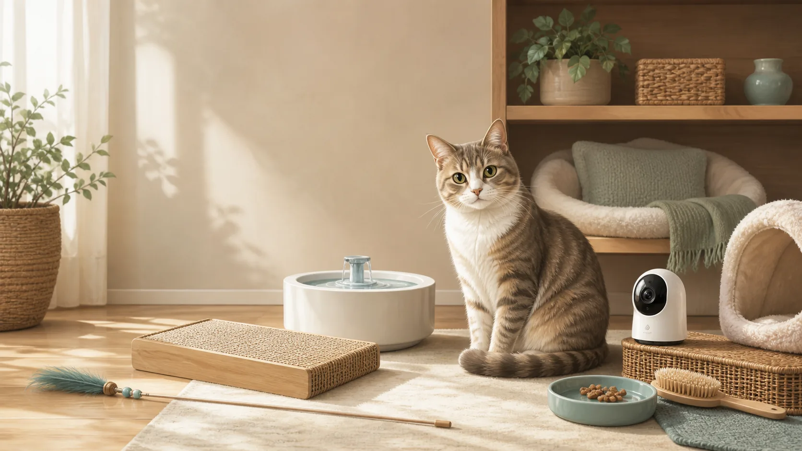
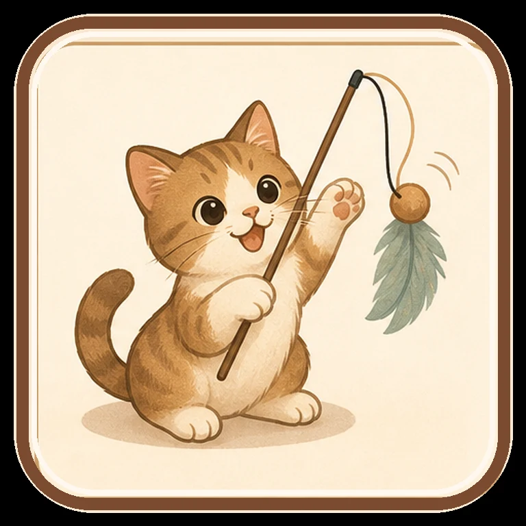

性格と困りごとから入口を選びます
遊び
合わない条件とやめるサインを先に見ます
今は買う前チェックを優先します
現在の状態
商品直リンクはまだ置いていません
今は、猫に合うか・合わない条件・やめるサインを先に見られる準備ページです。紹介リンクの確認が終わるまで、販売リンクより買う前チェックを優先します。
商品直リンクなし買う前チェック優先672/1000猫好きの仲間紹介商品を探す
新着のおすすめ
人気の猫動画から今日見る
伸びた投稿や反応テーマを、そのまま商品へ飛ばさず、猫の状態・買う前チェック・おすすめの準備へ分けて見ます。
すぐ選ぶ
うちの子の様子から、ぴったりを探そう
Xから来た人が迷わないように、診断、困りごと、買う前チェック、今日のおすすめへすぐ進める入口です。
前回のうちの子診断
保存した診断があります
この端末に残っている診断メモです。商品を見る前に、合わない条件と最初の試し方を見返せます。
人気の猫動画の伸び
1000猫好きの仲間準備
人気の猫動画の伸びに合わせて、売り込みではなくプロフィール導線と買う前チェックを先に育てます。
進捗 67.2%直近7日 +131残り 328到達目安 2026-07-19

現在672
1000猫好きの仲間まで
残り328
売り込みを強めず準備
直近7日+131
人気の猫動画を導線へ反映
到達目安2026-07-19
新着で再計算
新着情報
新着情報
SNSの投稿ログ、動画素材、商品おすすめを見て、猫に合う入口と今日のおすすめを更新します。
同期済み投稿 10動画 12商品 9
最終更新2026-07-01T17:28:11
公開データに反映済み
次回目安定期更新
定期更新
投稿ログ10
人気の猫動画の入口
動画/商品12/9
猫用品おすすめへ変換
迷ったらこの順番
商品より先に、うちの子に合うかを見ます
診断、買う前チェック、今日のおすすめの順に見ると、衝動買いではなく猫に合うおすすめだけを残せます。

 猫に合うか見る
猫優先ランキング
猫に合うか見る
猫優先ランキング
合いやすい順、慎重に見る順、様子見を分けて確認できます。
今のおすすめ 今日のおすすめ今いちばん整えるおすすめは 電動猫じゃらし です。

買う前に止まる 買う前チェック音、サイズ、置き場所、使いすぎを買う前に確認します。

買わない判断 見送り・やめどき買わない条件と、使い始めてから止める条件を商品ごとに見ます。
困りごとから探す 困りごとメニュー遊び、水、爪とぎ、留守番など困りごとから選べます。

今日の反応 今日の猫メモ合いやすい順、慎重に見る順、様子見を分けて確認できます。

方針を見る 広告と選定方針広告表記、選び方、猫を優先する基準を置いています。
電動猫じゃらし
慎重にリンク化買う前チェック
連続稼働しすぎないもの、羽根やひもの交換ができるものを優先します。
合わない猫
音や動きに怖がりやすい子、ひもや羽根を飲み込みやすい子、興奮が長引く子。
やめるサイン
怖がる、息が上がりすぎる、執着が強くなる時は短時間で止めます。
商品直リンクは急がない合わない条件まで見る広告表記あり
買わない判断
電動猫じゃらし を見送る時。反応が強い商品でも、猫に合わない条件がある時は無理に進めません。
合わない猫
音や動きに怖がりやすい子、ひもや羽根を飲み込みやすい子、興奮が長引く子。
やめるサイン
怖がる、息が上がりすぎる、執着が強くなる時は短時間で止めます。
相談を優先
呼吸、尿、食欲、嘔吐・下痢、ぐったりなどがある時は、用品より相談を優先します。
売るより、合わない理由を先に出します
人気の猫動画で反応が強くても、怖がる子・誤飲しやすい子・体調に不安がある子には別の入口を案内します。買わない判断があるほうが、猫のための導線として長く使えます。
買った後の見直し
電動猫じゃらし は、買って終わりではなく、猫が怖がらないか・生活が崩れないかを短く見直します。
初日
最初は数分だけ。興奮が強い日は手動のおもちゃで落ち着かせます。
3日目
使う頻度、片付けやすさ、猫の生活リズムが崩れていないかを見ます。
7日目
怖がる、息が上がりすぎる、執着が強くなる時は短時間で止めます。
無理に続けない条件
音や動きに怖がりやすい子、ひもや羽根を飲み込みやすい子、興奮が長引く子。
初日は短時間3日目に生活リズム確認7日目に続けるか判断
目的から探す
遊び、水分、爪とぎ、留守番など、猫の困りごとに合わせて入口を分けています。
猫優先で紹介します
このサイトには広告・アフィリエイトリンクを含む場合があります。猫に合うか、合わない条件、やめるサインを先に確認します。
広告・アフィリエイトリンクを含む場合があります。商品より先に、猫の安全、相性、使いすぎないことを確認します。